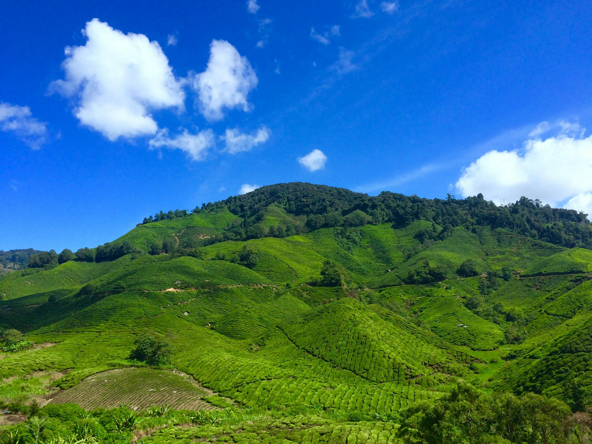
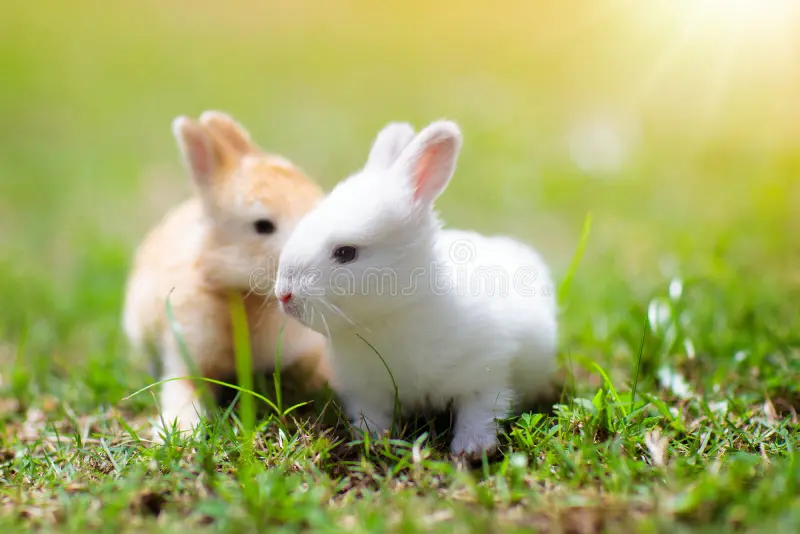
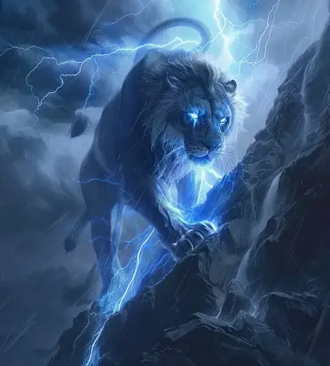
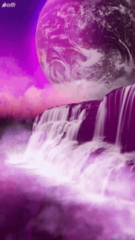

The sky changes from minute to minute. From orange yellow to flamboyant pink, the clouds painted with changing colours as the sun goes down.
The golden disc is already touching the surface of the ocean. It seems in a hurry to disappear, slipping quickly behind the line of the horizon spreading its last rays.
They are fluffy and relatively low to the ground. Clouds are visible accumulations of tiny water droplets or ice crystals in Earth's
atmosphere. Clouds differ greatly in size, shape, and color. They can appear thin and wispy, or bulky and lumpy.
A hill is a piece of land that rises higher than everything surrounding it. It looks like a little bump in the Earth.
 Since they are higher than everything around them, hills are good places to
get a nice view. Hills are easier to climb than mountains.

Rabbits are small, furry mammals with long ears, short fluffy tails, and strong, large hind legs.

"The Blue Lion is the right leg of Voltron, and has incredible powers to operate in water.
The Blue Lion is also the “friendliest” of the lions – it's the most accepting of new pilots and never has a problem forming Voltron.
The Blue Lion has an ice ray that can instantly freeze anything it touches."
"Pink lotus flowers are known as Buddha's earthly symbol, where a bud symbolizes one's spiritual journey and a fully-bloomed pink lotus represents enlightenment."

The waterfall normally runs clear, it occasionally turns bright pink after heavy rainfall, which stirs up a sediment called argolite that shines pink when the light hits it.
A butterfly is a flying insect with a small body and large, often colorful wings.
Some gardeners plant specific flowers that attract butterflies. Butterflies are closely related to moths,
which also have wings that are large in proportion to their bodies and antennae.
"The Swoosh is more than just a checkmark. It represents the wing of the Greek goddess Nike, symbolizing speed, movement, power, and motivation."